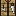

Szörnyek & Lények
A MITE:BE rengeteg új szörnyet ad a játékhoz. Az alábbi táblázatok tartalmazzák a fő statisztikákat.
Felszíni Szörnyek
Underground Szörnyek
Nether Szörnyek
Főellenfél: HIM
| Tulajdonság | Érték |
|---|---|
| HP | 400 |
| Sebzés | Változó — rendkívül magas |
| Immunis | Szinte mindenre — speciális mechanika szükséges |
| XP | Hatalmas mennyiség |
Speciális Lények
Változat Zombi, Változat Kúszó, Változat Pók, Változat Csontváz — erősebb verziók a szokásos szörnyekből.
Baby Kúszó, Zavart Kúszó, Szétválasztott Kúszó, Megfagyott Kúszó, Végvilág Villám Kúszó — Creeper variánsok.
Zombi Hívó, Bombázó, Obszidián Gólem, Sivatag Őr, Romlott Hóember — speciális szörnyek.
Partnerek: Harcos Lakos, Utazó, Bányász Lakos — szövetségesek!
Bájitalok & Hatások
Bájital Hatások
| Bájital / Hatás | Leírás | Szintek |
|---|---|---|
| Sebesség | Gyorsabb mozgás | I–IV |
| Erő | Több ütés sebzés | I–IV |
| Regeneráció | Folyamatos gyógyulás | I–IV |
| Tűzállóság | Tűz és láva nem sebez | I |
| Láva Ellenállás | Speciális MITE effekt — láva sebzés csökkentés | I |
| Éjszakai Látás | Látás sötétben | I |
| Vízben Való Légzés | Víz alatti lélegzés | I |
| Láthatatlanság | Szörnyek nem látnak | I |
| Sebzés (Harming) | Azonnali sebzés — Tűz Elementális ellen hatásos! | I–II |
| Gyógyítás (Healing) | Azonnali gyógyulás | I–II |
| Mérgezés | Folyamatos sebzés | I–IV |
| Gyengeség | Kevesebb sebzés | I–II |
| Lassúság | Lassabb mozgás | I–II |
| Sorvadás | Wither hatás | I–II |
| Korrózió | Felszerelés károsodás | I |
| Alvászavar | Nem tudsz aludni | I |
| Hideg | Fagyás — melegítsd magad! | I |
| Napszúrás | Hőség hatás | I |
| Paralízis | Mozgásképtelenség | I |
| Sebezhetőség | Több bekapott sebzés | I |
A legtöbb bájital Fröccsenő (Splash) változatban is elkészíthető — lőpor hozzáadásával. Fröccsenő bájitalok dobhatók ellenfelekre vagy szövetségesekre.
Üst (Cauldron) Mechanikák
Az Üst nem csak vizet tárol — speciális receptekhez is használható:
| Recept | Folyamat | Eredmény |
|---|---|---|
| Folyékony Arany | Üst lávaforrás alá + Arany érc beledobás → 10 mp várakozás | Folyékony arany — 4 Aranyalma készíthető belőle (4 alma/üst) |
| Folyékony Higany | Higany érc + Láva az üstben → olvasztás | Folyékony higany (vödörrel szedhető) |
| Ősi Fém Hátizsák | Bőr hátizsák + 4 Ősi Fém rúd higanyba → 30 mp várakozás | Ősi Fém hátizsák (több slot, tartósabb) |
Varázstalanító Palack (Disenchanting Bottle)
Különleges bájital amely bűvöléseket és hatásokat távolít el:
- Recept: Vízpalack + Szén + Pokoli Szemölcs (Nether Wart)
- Hatásai: Bűvölés eltávolítás tárgyakról, bájital hatások törlése, boszorkány átkok eltávolítása
- Rendkívül hasznos ha rossz bűvölést kaptál, vagy boszorkány megátkozott!
Munkaasztal Szintek
A különböző anyagú munkaasztalok különböző szintű tárgyak készítését teszik lehetővé. Minden magasabb szintű munkaasztal képes az alacsonyabb szintek tárgyait is elkészíteni.
Munkaasztalok elkészítése
Az alaprecept (Réztől felfelé): fémrúd/fémnyelv + Bőr + Bot + (bármely) Deszka.
| Munkaasztal | Kulcsanyag | Egyéb összetevők | Nehézség |
|---|---|---|---|
| Kőzet Munkaasztal | Kova Kés | Fatörzs | 270 |
| Réz Munkaasztal | Réz Nyelv | Bőr + Bot + Deszka | 605 |
| Ezüst Munkaasztal | Ezüst Nyelv | Bőr + Bot + Deszka | 605 |
| Arany Munkaasztal | Arany Rúd | Bőr + Bot + Deszka | 605 |
| Vas Munkaasztal | Vas Rúd | Bőr + Bot + Deszka | 1005 |
| Keménykő Munkaasztal | Keménykő Rúd | Bőr + Bot + Deszka | 1805 |
| Ősi Fém Munkaasztal | Ősi Fém Nyelv | Bőr + Bot + Deszka | 1805 |
| Mithril Munkaasztal | Mithril Nyelv | Bőr + Bot + Deszka | 6605 |
| Adamantium Munkaasztal | Adamantium Nyelv | Bőr + Bot + Deszka | 25805 |
| Obszidián Munkaasztal | Obszidián | Zsinór/Ón + Bot + Fatörzs | 410 |
Mit lehet melyiken készíteni?
A munkaasztal anyaga meghatározza a maximum szintet, amit rajta készíthetsz:
| Munkaasztal | Feloldott tárgyak és szintek |
|---|---|
| Kőzet Munkaasztal | Kova és fa szerszámok, kő és fa építőelemek, egyszerű receptek |
| Réz Munkaasztal | Réz szerszámok, réz fegyverek, réz páncél; Kő Kemence Mag |
| Ezüst Munkaasztal | Ezüst szerszámok, ezüst fegyverek, ezüst páncél; Kő Kemence Mag |
| Arany Munkaasztal | Arany szerszámok, fegyverek, páncél; Obszidián Kemence Mag |
| Vas Munkaasztal | Vas szerszámok, fegyverek, páncél; Obszidián Kemence Mag |
| Keménykő Munkaasztal | Keménykő szerszámok és fegyverek |
| Ősi Fém Munkaasztal | Ősi fém eszközök, fejlett elektronika (Bányász Sisak, Hűtőfolyadék) — +50% crafting sebesség! |
| Mithril Munkaasztal | Mithril tárgyak; Pokoli Kő Kemence Mag |
| Adamantium Munkaasztal | Adamantium tárgyak (legjobb fém szint); Pokoli Kő Kemence Mag |
| Obszidián Munkaasztal | Alap receptek + speciális obszidián tárgyak — NEM lép be a normál szint-hierarchiába; főként korai játék alternatíva |
A Kemence Mag elkészítéséhez maga a munkaasztal kerül a rácsközépre — és elhasználódik!
- Kő Kemence Mag: 8× Kőtömb + Réz vagy Ezüst Munkaasztal (középen)
- Obszidián Kemence Mag: 8× Obszidián + Arany vagy Vas Munkaasztal (középen)
- Pokoli Kő Kemence Mag: 8× Pokoli Kő + Mithril vagy Adamantium Munkaasztal (középen)

Minden munkaasztalnak létezik Automata változata is (PCB-vel fejleszthető)!
Maximális Tárgy Minőség Anyagonként
Minden anyag csak egy bizonyos minőségi szintig képes tárgyat készíteni — a ritka anyagok legendás minőségű tárgyakat adhatnak:
Kemence Tüzelőanyag Referencia
A különböző tüzelőanyagok eltérő ideig égnek és eltérő hőfokot (heat level) adnak — egyes ércek olvasztásához magasabb hőfokra van szükség!
| Tüzelőanyag | Égési idő | Hőfok | Megjegyzés |
|---|---|---|---|
| Lángoszlop Pálca 🔥 | 2 400 tick (~2 perc) | 4 ⭐ | Legmagasabb hőfok! |
| Lávavödör 🌋 | 3 200 tick (~2,7 perc) | 3 | Magas hőfok |
| Szénblokk 🪨 | 16 000 tick (~13 perc) | 2 | Leghosszabb égés! |
| Szén (kő) | 3 200 tick | 2 | Fém olvasztáshoz szükséges |
| Faszén | 3 200 tick | 1 | Kevésbé forró |
| Fatörzs | 1 600 tick | 1 | Kezdők tüzelőanyaga |
| Fáklya | 800 tick | 1 | — |
| Deszka / Faeszközök | 400 tick | 1 | Alacsony értékű |
Érc Olvasztás Hőfok Követelmények
Az ércolvasztás Bányász foglalkozást igényel! A hőfok meghatározza, milyen tüzelőanyag szükséges:
| Olvasztandó | Hőfok | Minimum tüzelőanyag | Eredmény |
|---|---|---|---|
| Szén érc, Fa | 1 | Bármi (fa, faszén...) | Szén / Faszén |
| Réz, Ezüst, Keménykő, Vas, Arany, Gyémánt, Ón érc | 2 | Szén (kő) | Megfelelő rúd |
| Mithril érc | 3 | Lávavödör | Mithril rúd |
| ⚠️ Adamantium érc | 4 ‼️ | Blázesrúd | Adamantium rúd |
Vérhold Rendszer
A MITE:BE különleges időjárási eseménye! A vérhold periodikusan visszatérő apokaliptikus éjszaka.
🌕 30. nap — Közeledik a vörös hold
Sok szörnyet láttál már a barlangokban. A vér elkezdi megrontani ezt a világot.
🔴 32. nap — 1. Vérhold (Evolúció I)
Jön a vérhold, az élőholtak szabadon kószálnak. Nappal a pókok és creeperek megvadulnak. A véreső fáradtságot hoz. Az éjszaka a rémálom kezdete — ragadd meg a fegyvered, védd a bázisod! Minden szörny Erő I buff-ot kap.
🏚️ 33. nap — Lerombolt bázis
A vérhold véget ért. Szomorúan nézed a lerombolt bázist, de erősebb lettél. Készülj a következő holdra!
🔴 64. nap — 2. Vérhold (Evolúció II)
De most már rendkívüli vagy. A kardod könnyedén áthatol a keményebb bőrön is. A szörnyek azonban erősebbek lettek.
🔵 128. nap — 3. Vérhold (Evolúció III) + Kék Hold
Nem csak rossz holdak vannak! Felkelt a kék hold, a termés virágzik — ez jó jel. De a vérhold szörnyei ismét erősödtek.
🔴 160. nap — 4. Vérhold (Evolúció IV)
A szörnyek immár jelentős erősítést kapnak. Mithril+ felszerelés erősen ajánlott!
🔴 192. nap — 5. Vérhold (Evolúció V)
Az apokalipszis közeleg. A szörnyek extrém erősek — teljes Adamantium szett nélkül szinte lehetetlen túlélni.
💀 224. nap — 6. Vérhold (Evolúció VI) — Maximális Nehézség
A végső szint. Innentől minden vérhold ezen a szinten marad. Csak a legerősebb felszereléssel és stratégiával élheted túl.
Magassági Hatások Vérhold Alatt
| Magasság | Hatás |
|---|---|
| Y 100 felett | Hányinger + Gyengeség — menj le a felszínre! |
| Y 50 alatt | Égés — a barlangok sem biztonságosak! |
| Y 50–100 | Nincs extra hatás (legjobb tartózkodási zóna) |
Jutalom Vérhold Túlélése Után
Minden túlélt vérhold után az alábbi jutalmak egyikét kapod (véletlenszerű):
- Bányász sebesség +10%
- Támadási sebzés +1
- Szomjúság fogyás -10%
- Éhség fogyás -10%
Ködfolt Esemény
Körülbelül 50 naponta ködfolt esemény léphet fel, amely 48–72 óráig tart. A köd drastikusan lecsökkenti a látótávolságot.
Ha Vérhold egybeesik ködfolttal — a legjobb amit tehetsz, hogy a bázison várod ki.
Teljesítmények (Achievements)
A MITE:BE több mint 130 egyedi teljesítményt tartalmaz, amelyek a progressziót követik. Íme a legfontosabbak:
Korai játék (1-15)
Fém korszak (16-28)
Végső kihívások (36-43)
Időalapú teljesítmények
| Nap | Teljesítmény | Leírás |
|---|---|---|
| 2,5. | Kitartás – sikerülni fog! | Túlélhetsz ebben a világban! |
| 6. | Alkalmazkodás kezdete! | Ismered a szabályokat, alkalmazkodj! |
| 12. | Megvan az első felszerelés! | Meleg kemence, készlet |
| 16. | Kihívom ezt a világot! | Ércekből sugárzó energia |
| 50. | Telnek a napok... | Sok biom bejárva, állatok barátságosak |
| 80. | Ráéreztem a ritmusra | Obszidiánban téreltoló mágia |
| 96. | Már nem vetélytársam | A vérhold semmi |
| 100. | 100 nap | Ki vagyok? Miért kerültem ide? |
| 128. | Kék hold | A termés virágzik — jó jel! |
| 200. | 200 nap! | Elégedettség, gazdagodás |
| 300. | 300 nap | Luxusra fordíthatod az erőforrásokat |
| 400. | Az élet ilyen egyszerű | Bányász, gazda, harcos — élvezed az életet |
⚔️ MITE:BE v0.9.0 — Teljes Magyar Wiki ⚔️
A játékfájlok alapján generálva
A wiki a MITE.lang, hu_HU.lang és a class fájlok adatai alapján készült.
⌨️ Egyéni Gyorsbillentyűk
A MITE:BE a vanilla Minecrafthoz képest 20+ egyéni keybindot ad hozzá. Ezeket a Beállítások → Billentyűk menüben szabhatod testre. Az alábbiakat az in-game fájlokból (MITE.lang) nyertük ki.
| Funkció | Alapértelmezett | Leírás |
|---|---|---|
| Ivás | — | Vizet/folyadékot iszik a víztasak nélkül |
| Víztasak ürítése | — | Vizet önt a víztasakból |
| Ürítés | J | Kézi ürítés (defecation) |
| Hátizsák megnyitása | — | Megnyitja a hátizsákot |
| Tárgyak rendezése | — | Inventory rendezés (InvTweaks) |
| Csapat menü | — | Squad/csapat kezelés |
| Játékos státusz | — | Megmutatja a játékos részletes státuszát |
| Játékos cipelése | — | Egy másik játékost cipelhet a hátán (multiplayer) |
| Földön alvás | — + Jobb klikk | Ágy nélküli alvás (debuffot ad!) |
| Sprint rögzítés | — | Folyamatos sprint engedélyezése/tiltása |
| Kúszás | — | Alacsony helyeken való átmászás |
| Köd ki/be | — | Köd vizuális effekt kapcsoló |
| Zoom | — | Nagyítás (mint távcső) |
| Fáklya fogadása | — | Másik játékostól érkező fáklya elfogadása |
| Vein Miner | — | Egész ércréteg egyszerre bányászása |
| Bányász sisak lámpa | — | Bányász sisak fényének ki/be kapcsolása |
| Esőkabát megjelenítés | — | Esőkabát vizuális megjelenítése |
| Hátizsák megjelenítés | — | Hátizsák vizuális megjelenítése a háton |
| Chunk újratöltés | — | Renderelt chunk-ok kényszer-újratöltése |
| Fű/levél minőség | — | Better Grass and Leaves beállítások |
Mobs & Creatures
MITE:BE adds tons of new mobs. The tables below contain key statistics.
Surface Mobs
Underground Mobs
Nether Mobs
Ultimate Boss: HIM
| Stat | Value |
|---|---|
| HP | 400 |
| Damage | Variable — extremely high |
| Immunities | Immune to nearly everything — special mechanics required |
| XP | Massive amount |
Special Mobs
Variant Zombie, Variant Creeper, Variant Spider, Variant Skeleton — stronger versions of common mobs.
Baby Creeper, Confused Creeper, Split Creeper, Frozen Creeper, End Lightning Creeper — creeper variants.
Zombie Caller, Bomber Man, Obsidian Golem, Desert Guard, Evil Snowman — special creatures.
Partners: Warrior Villager, Traveller, Miner Villager — your allies!
Potions & Effects
Potion Effects
| Potion / Effect | Description | Tiers |
|---|---|---|
| Speed | Faster movement | I–IV |
| Strength | More melee damage | I–IV |
| Regeneration | Continuous healing | I–IV |
| Fire Resistance | Fire and lava don't hurt | I |
| Lava Resistance | MITE-specific — reduced lava damage | I |
| Night Vision | See in the dark | I |
| Water Breathing | Breathe underwater | I |
| Invisibility | Mobs can't see you | I |
| Harming | Instant damage — effective against Fire Elementals! | I–II |
| Healing | Instant health | I–II |
| Poison | Continuous damage | I–IV |
| Weakness | Less damage dealt | I–II |
| Slowness | Slower movement | I–II |
| Wither | Wither effect | I–II |
| Corrosion | Equipment damage | I |
| Insomnia | Can't sleep | I |
| Cold | Freezing — warm up! | I |
| Sunstroke | Heat effect | I |
| Paralysis | Cannot move | I |
| Vulnerability | Take more damage | I |
Most potions can also be crafted as Splash variants — add gunpowder. Splash potions can be thrown at enemies or allies.
Cauldron Mechanics
The Cauldron isn't just for water storage — it enables special recipes:
| Recipe | Process | Result |
|---|---|---|
| Liquid Gold | Cauldron under lava source + drop Gold ore → wait 10 sec | Liquid gold — make 4 Golden Apples (4 apples/cauldron) |
| Liquid Mercury | Mercury ore + Lava in cauldron → smelting | Liquid mercury (collect with bucket) |
| Ancient Metal Backpack | Leather backpack + 4 Ancient Metal ingots in mercury → wait 30 sec | Ancient Metal backpack (more slots, more durable) |
Disenchanting Bottle
A special potion that removes enchantments and effects:
- Recipe: Water Bottle + Coal + Nether Wart
- Effects: Removes enchantments from items, clears potion effects, removes witch curses
- Extremely useful if you got a bad enchantment or were cursed by a witch!
Workbench Tiers
Different material workbenches unlock different tier items. Every higher-tier workbench can also craft all lower-tier items.
Crafting Workbenches
The basic recipe (Copper and above): metal ingot/bar + Leather + Stick + (any) Plank.
| Workbench | Key Material | Other Components | Difficulty |
|---|---|---|---|
| Flint Workbench | Flint Knife | Wood Log | 270 |
| Copper Workbench | Réz Nyelv (Copper Bar) | Leather + Stick + Plank | 605 |
| Silver Workbench | Ezüst Nyelv (Silver Bar) | Leather + Stick + Plank | 605 |
| Gold Workbench | Gold Ingot | Leather + Stick + Plank | 605 |
| Iron Workbench | Iron Ingot | Leather + Stick + Plank | 1005 |
| Hardstone Workbench | Hardstone Ingot | Leather + Stick + Plank | 1805 |
| Ancient Metal Workbench | Ősi Fém Nyelv (Ancient Metal Bar) | Leather + Stick + Plank | 1805 |
| Mithril Workbench | Mithril Nyelv (Mithril Bar) | Leather + Stick + Plank | 6605 |
| Adamantium Workbench | Adamantium Nyelv (Adamantium Bar) | Leather + Stick + Plank | 25805 |
| Obsidian Workbench | Obsidian | String/Tin + Stick + Log | 410 |
What Can Be Crafted Where?
The workbench material determines the maximum tier of items you can craft at it:
| Workbench | Unlocked Items & Tiers |
|---|---|
| Flint Workbench | Flint & wood tools, stone/wood building materials, basic recipes |
| Copper Workbench | Copper tools, weapons & armor; Stone Furnace Core |
| Silver Workbench | Silver tools, weapons & armor; Stone Furnace Core |
| Gold Workbench | Gold tools, weapons & armor; Obsidian Furnace Core |
| Iron Workbench | Iron tools, weapons & armor; Obsidian Furnace Core |
| Hardstone Workbench | Hardstone tools and weapons |
| Ancient Metal Workbench | Ancient metal items, advanced electronics (Mining Helmet, Cooling Liquid) — +50% crafting speed! |
| Mithril Workbench | Mithril items; Netherrack Furnace Core |
| Adamantium Workbench | Adamantium items (best metal tier); Netherrack Furnace Core |
| Obsidian Workbench | Basic recipes + special obsidian items — NOT part of the normal tier hierarchy; mainly an early-game alternative |
To craft a Furnace Core, the workbench itself goes into the center slot of the crafting grid — and gets consumed!
- Stone Furnace Core: 8× Stone Block + Copper or Silver Workbench (center)
- Obsidian Furnace Core: 8× Obsidian + Gold or Iron Workbench (center)
- Netherrack Furnace Core: 8× Netherrack + Mithril or Adamantium Workbench (center)
Every workbench also has an Auto variant (upgradeable with PCB)!
Maximum Item Quality by Material
Each material can only craft items up to a certain quality tier — rarer materials enable legendary quality items:
Furnace Fuel Reference
Different fuels burn for different durations and provide different heat levels — some ores require higher heat to smelt!
| Fuel | Burn Time | Heat Level | Notes |
|---|---|---|---|
| Blaze Rod 🔥 | 2,400 ticks (~2 min) | 4 ⭐ | Highest heat level! |
| Lava Bucket 🌋 | 3,200 ticks (~2.7 min) | 3 | High heat |
| Coal Block 🪨 | 16,000 ticks (~13 min) | 2 | Longest burn time! |
| Coal | 3,200 ticks | 2 | Required for metal smelting |
| Charcoal | 3,200 ticks | 1 | Less hot than coal |
| Log | 1,600 ticks | 1 | Early-game fuel |
| Torch | 800 ticks | 1 | — |
| Planks / Wood tools | 400 ticks | 1 | Low value |
Ore Smelting Heat Requirements
Smelting ores requires the Miner profession! The heat level determines what fuel you must use:
| Ore to Smelt | Heat Level | Minimum Fuel | Result |
|---|---|---|---|
| Coal ore, Wood | 1 | Anything (wood, charcoal...) | Coal / Charcoal |
| Copper, Silver, Hardstone, Iron, Gold, Diamond, Tin ore | 2 | Coal | Corresponding ingot |
| Mithril ore | 3 | Lava Bucket | Mithril ingot |
| ⚠️ Adamantium ore | 4 ‼️ | Blaze Rod | Adamantium ingot |
Blood Moon System
MITE:BE's signature event! The Blood Moon is a periodically recurring apocalyptic night.
🌕 Day 30 — The Red Moon Approaches
You've seen many monsters in the caves. Blood begins to corrupt this world.
🔴 Day 32 — 1st Blood Moon (Evolution I)
The blood moon rises, undead roam freely. During the day, spiders and creepers go berserk. Blood rain brings fatigue. Night is when the nightmare begins — grab your weapon, defend your base! All mobs receive Strength I buff.
🏚️ Day 33 — Destroyed Base
The blood moon is over. You sadly look at your destroyed base, but you're stronger now. Prepare for the next one!
🔴 Day 64 — 2nd Blood Moon (Evolution II)
But now you're extraordinary. Your sword cuts through the toughest hide with ease. The monsters, however, have grown stronger.
🔵 Day 128 — 3rd Blood Moon (Evolution III) + Blue Moon
Not all moons are bad! The blue moon rises, crops flourish — a good omen. But the blood moon monsters have grown stronger still.
🔴 Day 160 — 4th Blood Moon (Evolution IV)
Monsters receive significant buffs. Mithril+ gear strongly recommended!
🔴 Day 192 — 5th Blood Moon (Evolution V)
The apocalypse approaches. Monsters are extremely powerful — nearly impossible to survive without full Adamantium gear.
💀 Day 224 — 6th Blood Moon (Evolution VI) — Maximum Difficulty
The final tier. From now on, every blood moon stays at this level. Only the strongest gear and strategy will keep you alive.
Altitude Effects During Blood Moon
| Altitude | Effect |
|---|---|
| Above Y 100 | Nausea + Weakness — get down to the surface! |
| Below Y 50 | Burning — caves aren't safe either! |
| Y 50–100 | No extra effects (best zone to stay in) |
Rewards After Surviving Blood Moon
After each survived blood moon, you receive one of the following rewards (random):
- Mining speed +10%
- Attack damage +1
- Thirst drain -10%
- Hunger drain -10%
Fog Event
Approximately every 50 days, a fog event can occur that lasts 48–72 hours. The fog drastically reduces visibility.
If a Blood Moon coincides with a fog event — the best strategy is to wait it out safely inside your base.
Achievements
MITE:BE features over 130 unique achievements that track your progression. Here are the key ones:
Early Game (1-15)
Metal Age (16-28)
Endgame (36-43)
Time-Based Achievements
| Day | Achievement | Description |
|---|---|---|
| 2.5 | Hang In There — You Can Do It! | You can survive in this world! |
| 6 | Starting to Adapt! | You know the rules now, adapt! |
| 12 | Got My First Gear! | Warm furnace, equipment ready |
| 16 | I Challenge This World! | Energy radiating from ores |
| 50 | Days Keep Passing... | Many biomes explored, animals friendly |
| 80 | Found My Rhythm | Space-warping magic in obsidian |
| 96 | No Longer My Rival | Blood moon is nothing |
| 100 | 100 Days | Who am I? Why was I brought here? |
| 128 | Blue Moon | Crops flourish — a good omen! |
| 200 | 200 Days! | Satisfaction, growing wealth |
| 300 | 300 Days | Resources spent on luxury now |
| 400 | Life Is This Simple | Miner, farmer, warrior — enjoy life |
⚔️ MITE:BE v0.9.0 — Complete Wiki ⚔️
Data extracted directly from game files (MITE.lang, class files, achievement data)
If this helped you, consider sharing it with the community!
⌨️ Custom Keybindings
MITE:BE adds 20+ custom keybindings on top of vanilla Minecraft. These can be customized in Options → Controls. The list below was extracted from in-game files (MITE.lang).
| Action | Default | Description |
|---|---|---|
| Drink | — | Drink fluid directly |
| Pour Water from Water Skin | — | Empties water from the water bag |
| Excrete | J | Manual defecation |
| Open Backpack | — | Opens the backpack inventory |
| Sort Inventory | — | Auto-sort inventory (InvTweaks) |
| Team | — | Open squad/team management |
| Status | — | View detailed player status screen |
| Ride Player | — | Carry another player on your back (multiplayer) |
| Sleep on Ground | — + Right Click | Sleep without a bed (applies debuffs!) |
| Lock Sprint | — | Toggle continuous sprinting |
| Crawl | — | Crawl through low spaces |
| Toggle Fog | — | Toggle fog visual effect |
| Zoom | — | Zoom in (like a spyglass) |
| Claim Torch | — | Accept a torch from another player |
| Vein Miner | — | Mine an entire ore vein at once |
| Toggle Miner's Helmet Light | — | Turn the miner's helmet light on/off |
| Toggle Rain Hat Display | — | Show/hide rain hat visual |
| Toggle Backpack Display | — | Show/hide backpack on character back |
| Reload Chunks | — | Force-reload rendered chunks |
| Better Grass & Leaves Panel | — | Open grass/leaf quality settings |